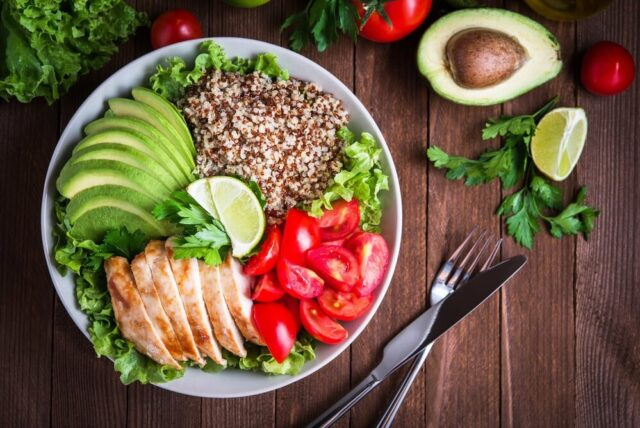

¿Qué es una alimentación saludable?
La alimentación saludable es aquella que proporciona los nutrientes que el cuerpo necesita para mantener el buen funcionamiento del organismo, conservar o restablecer la salud, minimizar el riesgo de enfermedades, garantizar la reproducción, gestación, lactancia, desarrollo y crecimiento adecuado. Para lograrlo, es necesario el consumo diario de frutas, verduras, cereales integrales, legumbres, leche, carnes, aves y pescado y aceite vegetal en cantidades adecuadas y variadas. Si lo hacemos así, estamos diciendo que tenemos una alimentación saludable.
Pero ¿cómo saber qué aporta cada uno al organismo? Para esto tengamos en cuenta que los nutrientes aportados por los alimentos se clasifican en dos grupos: los macronutrientes, del cual hacen parte las grasas, los carbohidratos, y las proteínas; y los micronutrientes compuestos por los minerales y las vitaminas.
MACRONUTRIENTES
Grasas
Son una de las principales fuentes de energía para el organismo, que al consumirlas en las cantidades adecuadas se convierten en un elemento primordial que ayuda al crecimiento, al desarrollo y a mantener una buena salud. Se debe tener en cuenta que las grasas se pueden encontrar en tres presentaciones: sólida (manteca), semisólidas (mantequillas o margarinas) o líquidas (aceites); cada una de ellas tiene efectos diferentes en el metabolismo. No todas las grasas son favorables; uno de estos casos es el de las grasas trans, un tipo específico que se forma cuando los aceites líquidos se convierten en grasas sólidas como la manteca o la margarina en barra.
Carbohidratos
Son las responsables de la formación de células, los tejidos y órganos, así como de construir los músculos, parte de las hormonas, de las enzimas que transportan ciertas moléculas (como la grasa) y transmitir señales. También están presentes en una gran cantidad de funciones del organismo. Durante los periodos de crecimiento, embarazo, lactancia y recuperación de enfermedades es necesario el consumo de alimentos fuentes de proteína en mayor cantidad. Las fuentes de proteína pueden ser de origen animal como huevos, pescados, leche, carnes magras, pavo, y pollo; o de origen vegetal como las leguminosas (frijol, lenteja, garbanzo, alverja), nueces y frutos secos, quinua, entre otros.
Proteina
indispensable en el crecimiento y desarrollo normal, en la reproducción y el funcionamiento del sistema inmune, en la cicatrización de heridas, y en la mejora de los sentidos del gusto y del olfato. Los alimentos fuente de proteína también son buena fuente de zinc: carne de ternera, pollo y cerdo, ostras, leche, queso, nueces y leguminosas.
MICRONUTRIENTES
Hierro
Es uno de los componentes que se encuentra en la hemoglobina (presente en los glóbulos rojos) y la mioglobina (presente en el músculo) encargadas de transportar el oxígeno. Los alimentos que contienen hierro son carnes, hígado, vísceras, leche, huevos y alimentos de origen vegetal. La combinación de alimentos fuentes de hierro con el consumo simultáneo de alimentos fuentes de vitamina C (guayaba, naranja, cítricos) aumenta de manera importante su absorción.
Calcio
Se encuentra presente en diferentes tejidos del cuerpo como las neuronas y la sangre, el líquido entre células, los músculos, entre otros. Es necesario para mantener y desarrollar huesos y dientes sanos, para relajar músculos, vasos y arterias sanguíneas, para secretar hormonas y enzimas. Las fuentes de calcio que tienen mejor absorción son los derivados lácteos como leche, queso, kumis y yogurt, y tienen un mayor efecto cuando son combinados con alimentos fuentes de vitamina D, como aceite de hígado de res, atún o salmón.
Zinc
Indispensable en el crecimiento y desarrollo normal, en la reproducción y el funcionamiento del sistema inmune, en la cicatrización de heridas, y en la mejora de los sentidos del gusto y del olfato. Los alimentos fuente de proteína también son buena fuente de zinc: carne de ternera, pollo y cerdo, ostras, leche, queso, nueces y leguminosas.
Vitamina A
Mantiene el funcionamiento del sistema inmune, la piel, los ojos y su visión, contribuye a la reparación de las vellosidades intestinales y el tejido pulmonar. Su consumo está relacionado con la prevención de infecciones. Se encuentra en alimentos de origen animal como carne, hígado y vísceras, en frutas y verduras de color naranja y amarillo como ahuyama, papaya, melón y tomate, entre otros.

Vitamina B
Participan en la digestión y la absorción de los carbohidratos. Son parte de este grupo la tiamina, la riboflavina, la niacina y el ácido fólico. Éste último se destacapor su función y necesidad, ya que cuando hay bajos niveles en el organismo se afectan los glóbulos rojos, las células intestinales y se desarrolla anemia. Esta vitamina debe ser consumida en mayor cantidad durante el embarazo para evitar problemas de formación del sistema nervioso en el feto. Las hortalizas de hojas verdes y oscuras, las leguminosas como frijol, lenteja y arveja así como frutas son fuente de ácido fólico.
Vitamina C
Ayuda en la producción y mantenimiento del tejido conectivo del cuerpo (huesos, dientes, piel, y tendones), en la cicatrización de heridas y tiene funciones antioxidantes. Todas las frutas y verduras son buena fuente de vitamina C.